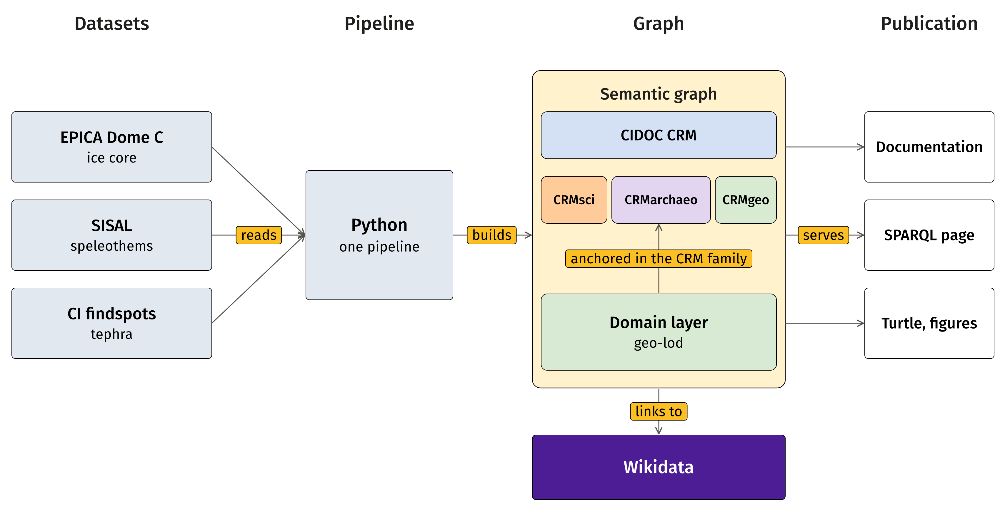
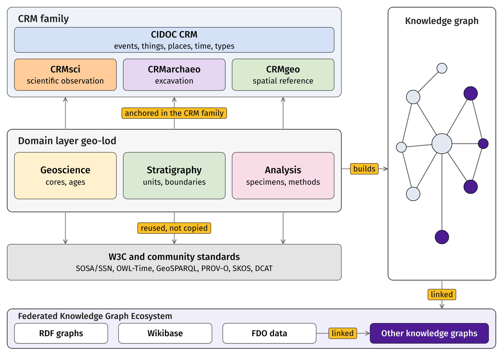
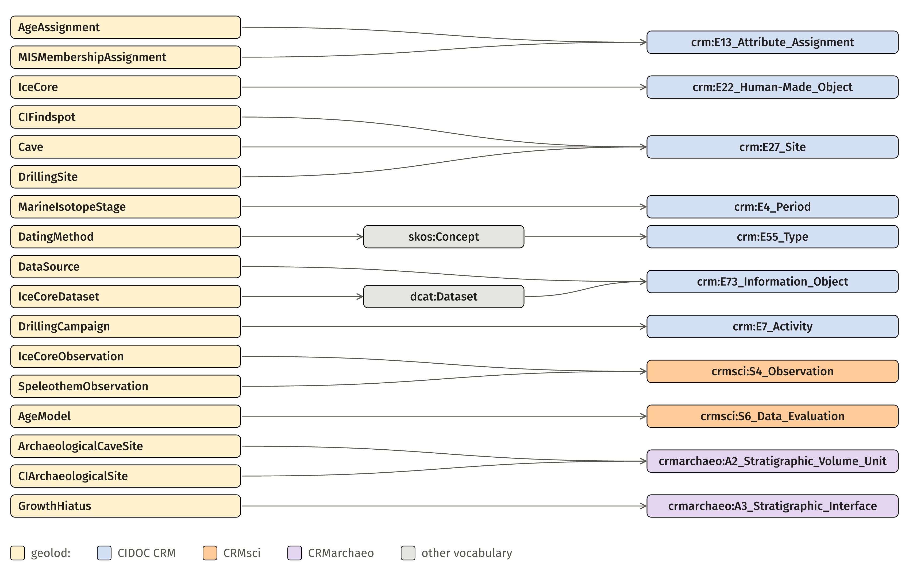
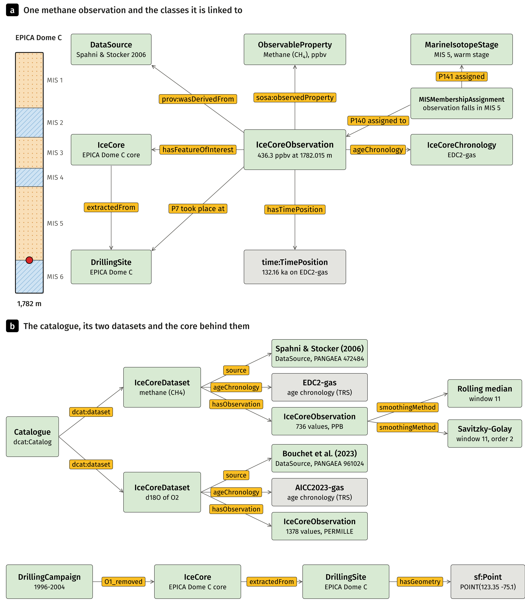
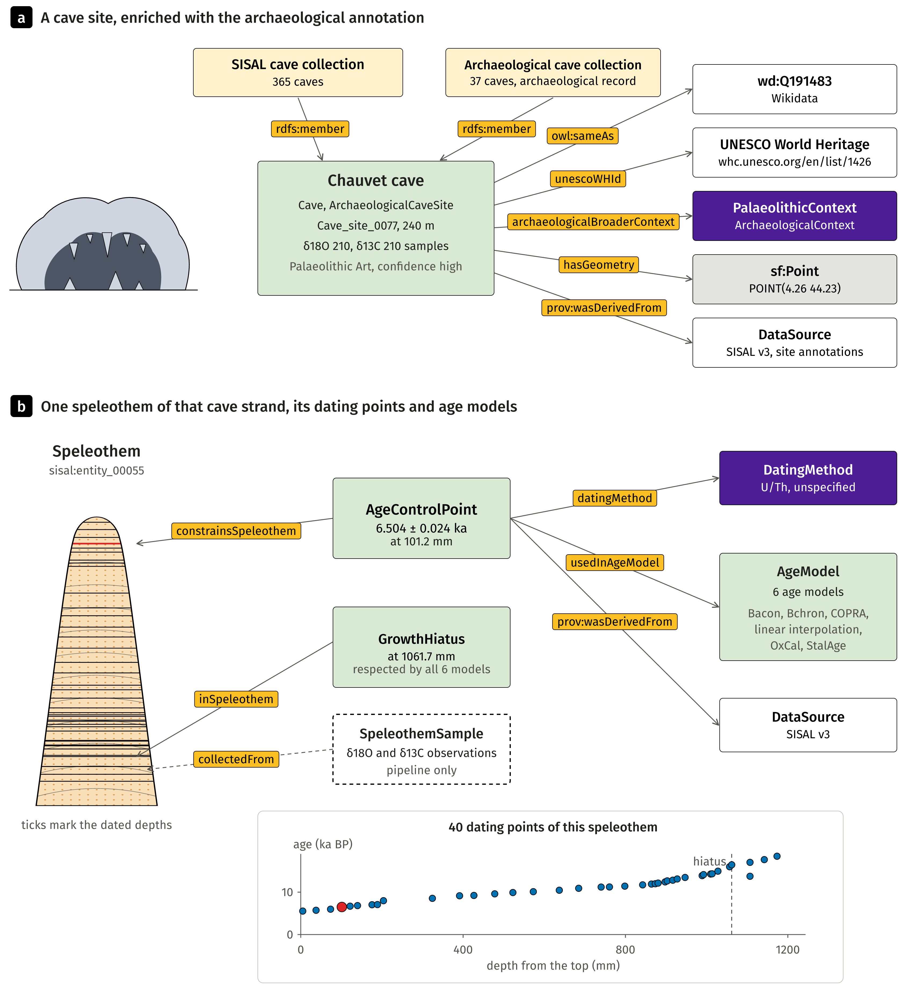
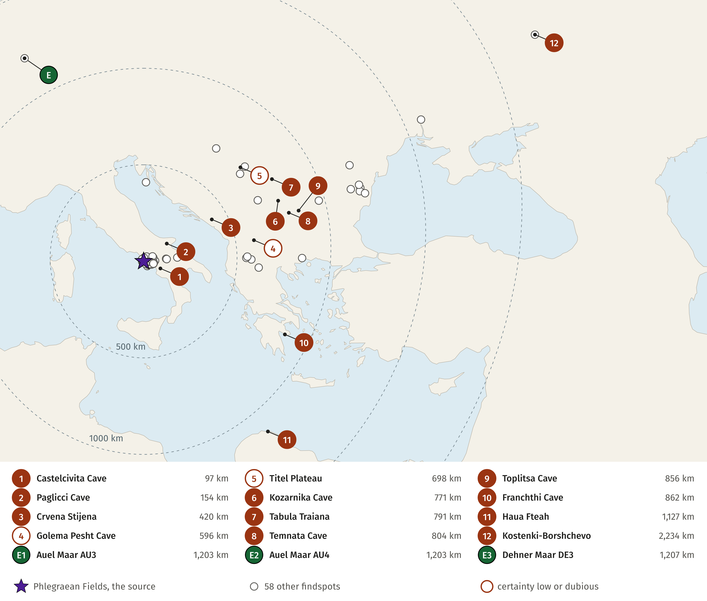
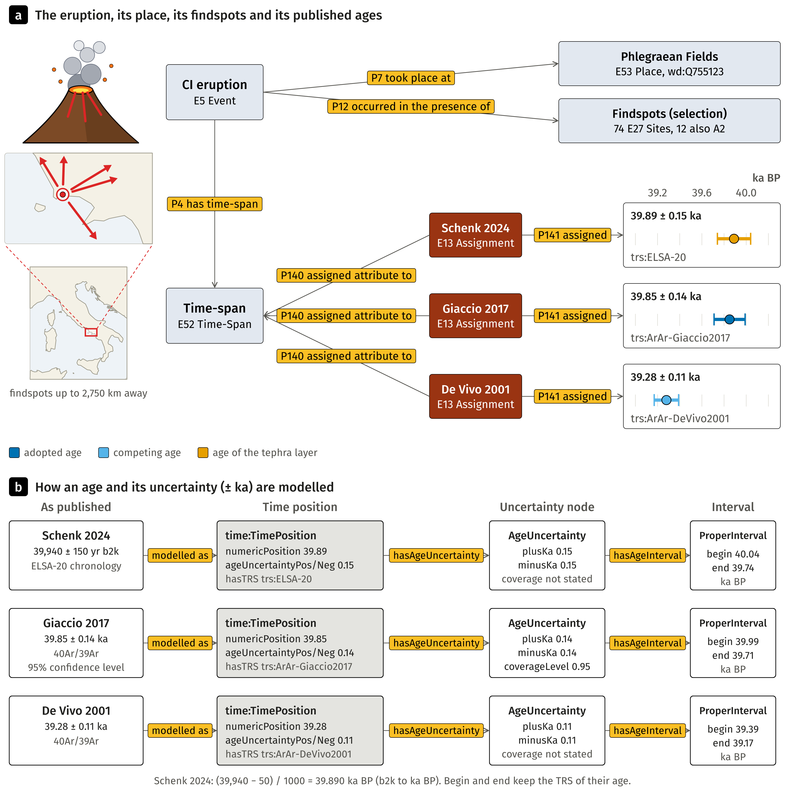
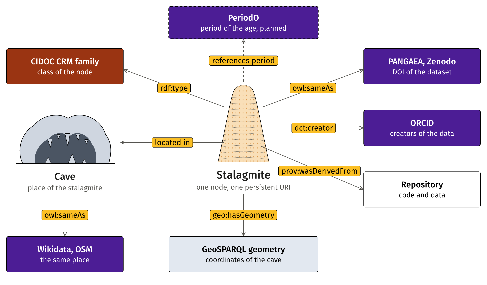

Interactive map for the reviewers
SISAL caves through time: a slider over 0 to 500 ka BP; a cave is lit when the age lies within the span of its published age model. The span marks where a record begins and ends, hiatuses lie inside it.
The figures of the paper with their captions, rebuilt from the graphs of this repository by visuals/paper_figs.py. The captions are drafts for the revision and live in visuals/paper_captions.yaml; the classes and properties behind them are in the documentation.
![The FAIR4RS coin. Executable reproducibility (left) and semantic interoperability (right) are two halves of one coin, held together by the RSE methodology in the middle: software engineering, the FAIR4RS principles and sustainable research software. Each half has its own unit of trust, the repeatable run and the resolvable identifier. The squirrel on the coin stands for the Research Squirrel Engineers; the acorn it holds sprouts again below the coin, as a seed for re-use. Data enter on the left and leave as processed data and visualisations and as a tagged release with a DOI; on the right the same run yields RDF and Linked Data, the knowledge graph and interdisciplinary queries.](img/paper/paper-coin.png)
Fig. 1The FAIR4RS coin. Executable reproducibility (left) and semantic interoperability (right) are two halves of one coin, held together by the RSE methodology in the middle: software engineering, the FAIR4RS principles and sustainable research software. Each half has its own unit of trust, the repeatable run and the resolvable identifier. The squirrel on the coin stands for the Research Squirrel Engineers; the acorn it holds sprouts again below the coin, as a seed for re-use. Data enter on the left and leave as processed data and visualisations and as a tagged release with a DOI; on the right the same run yields RDF and Linked Data, the knowledge graph and interdisciplinary queries.
Fiona Schenk, Florian Thiery, Research Squirrel Engineers at LEIZA. CC BY 4.0.
Replaces: Fig. 1 (generated infographic)

newgeo-lod in one picture: three datasets (EPICA, SISAL and the Campanian Ignimbrite) pass through one reproducible pipeline into a graph anchored in the CIDOC CRM family, and the graph is published.
Fiona Schenk, Florian Thiery, Research Squirrel Engineers at LEIZA. CC BY 4.0.
Replaces: none

newThe geo-lod layer between the CIDOC CRM family and W3C standards, and the knowledge graph it produces.
Fiona Schenk, Florian Thiery, Research Squirrel Engineers at LEIZA. CC BY 4.0.
Replaces: none

CrosswalkThe classes of the paper, each with the chain of rdfs:subClassOf statements that carries it into the CIDOC CRM family, read from the ontology files. The live ontology pages are linked from the text.
Fiona Schenk, Florian Thiery, Research Squirrel Engineers at LEIZA. CC BY 4.0.
Replaces: the OntDoc screenshots
![Pipeline outputs on a vertical age axis. Panels a to e: the five EPICA Dome C series read from the committed graph, methane (CH4), δD, dust (logarithmic axis), δ18O of O2 and δO2/N2, each on the timescale it is dated on. Panels f to i: δ18O and δ13C of every entity of Spannagel Cave and of the Piani Eterni karst system from SISAL v3, on one age axis from 0 to 290 ka; these values are taken from the pipeline files of the two sites because the committed graph holds no per-sample SISAL values. Grey: measured values. Black (EPICA) or coloured (one colour per entity, SISAL): rolling median over 11 points, calculated for each uninterrupted run. A dashed line with ringed ends crosses a stretch without samples; it does not state that nothing grew. Marine isotope stages follow Railsback et al.; odd stages are warm and even stages cold. A pale band with a dashed edge is a stage that the record does not reach.](img/paper/paper-fig2.png)
Fig. 2Pipeline outputs on a vertical age axis. Panels a to e: the five EPICA Dome C series read from the committed graph, methane (CH4), δD, dust (logarithmic axis), δ18O of O2 and δO2/N2, each on the timescale it is dated on. Panels f to i: δ18O and δ13C of every entity of Spannagel Cave and of the Piani Eterni karst system from SISAL v3, on one age axis from 0 to 290 ka; these values are taken from the pipeline files of the two sites because the committed graph holds no per-sample SISAL values. Grey: measured values. Black (EPICA) or coloured (one colour per entity, SISAL): rolling median over 11 points, calculated for each uninterrupted run. A dashed line with ringed ends crosses a stretch without samples; it does not state that nothing grew. Marine isotope stages follow Railsback et al.; odd stages are warm and even stages cold. A pale band with a dashed edge is a stage that the record does not reach.
Fiona Schenk, Florian Thiery, Research Squirrel Engineers at LEIZA. CC BY 4.0.
Replaces: Fig. 2 (eight panels)
![Class hierarchy of the geo-lod ontology, read from the ontology files: 47 geo-lod classes (solid, yellow), each below the classes of the CIDOC CRM family and of other vocabularies it is anchored in. Every CRM extension class (CRMsci orange, CRMarchaeo violet) stands below the CIDOC CRM core class it specialises; classes from other vocabularies are grey. A dashed line is a second parent, a dashed box an ancestor outside geo-lod. The stripe on the left of a class names the domain extension that declares it (blue EPICA, green SISAL, orange Campanian Ignimbrite); classes without a stripe are shared by all three. The CRMarchaeo anchors carry the bridge to cultural heritage of Section 5.](img/paper/paper-taxonomy.png)
Fig. 3Class hierarchy of the geo-lod ontology, read from the ontology files: 47 geo-lod classes (solid, yellow), each below the classes of the CIDOC CRM family and of other vocabularies it is anchored in. Every CRM extension class (CRMsci orange, CRMarchaeo violet) stands below the CIDOC CRM core class it specialises; classes from other vocabularies are grey. A dashed line is a second parent, a dashed box an ancestor outside geo-lod. The stripe on the left of a class names the domain extension that declares it (blue EPICA, green SISAL, orange Campanian Ignimbrite); classes without a stripe are shared by all three. The CRMarchaeo anchors carry the bridge to cultural heritage of Section 5.
Fiona Schenk, Florian Thiery, Research Squirrel Engineers at LEIZA. CC BY 4.0.
Replaces: Fig. 3

Fig. 4One methane observation of the EPICA Dome C ice core. Panel a: the observation with the classes around it, the core drawn beside it and its marine isotope stages 1 to 6, read from the graph. Panel b: the catalogue with its datasets, their sources, chronologies and smoothing, and where the core comes from.
Fiona Schenk, Florian Thiery, Research Squirrel Engineers at LEIZA. CC BY 4.0.
Replaces: Fig. 4

Fig. 5The cave site Chauvet and one SISAL speleothem. Panel a: the cave site with what the annotation adds. Panel b: one speleothem as a stalagmite with a tick at every dated depth, one age control point with its dating method, age models and source, the hiatus, and the dating points by depth and age. Dashed: the parts that only the pipeline writes.
Fiona Schenk, Florian Thiery, Research Squirrel Engineers at LEIZA. CC BY 4.0.
Replaces: Fig. 5
![The 365 SISAL v3 caves of the graph. Colour: the oldest age of the samples of the cave that carry a δ18O value in the published age model, in ka BP on the square-root scale of the colour bar; four caves are older than 600 ka and take the colour of the bar's end. Rings: caves for which the site annotation of the graph records an archaeological use, with the stated confidence (27 high, 9 medium, 1 low); the ring says that an archaeological use is recorded for the cave, not that the SISAL samples come from an archaeological context. Hollow dots: four caves without a dated δ18O sample, which therefore have no age. The curve beneath the map shows the caves with a record at each age, that is, the caves whose span from the youngest to the oldest sample includes that age (at most 152); it does not claim that the records are continuous. The strip gives the marine isotope stages (Railsback et al.). 1 Spannagel Cave and 2 Piani Eterni karst system are the caves of Fig. 2 f to i; E marks the Eifel, as on the map of the Campanian Ignimbrite findspots.](img/paper/paper-sisal-map.png)
MapThe 365 SISAL v3 caves of the graph. Colour: the oldest age of the samples of the cave that carry a δ18O value in the published age model, in ka BP on the square-root scale of the colour bar; four caves are older than 600 ka and take the colour of the bar's end. Rings: caves for which the site annotation of the graph records an archaeological use, with the stated confidence (27 high, 9 medium, 1 low); the ring says that an archaeological use is recorded for the cave, not that the SISAL samples come from an archaeological context. Hollow dots: four caves without a dated δ18O sample, which therefore have no age. The curve beneath the map shows the caves with a record at each age, that is, the caves whose span from the youngest to the oldest sample includes that age (at most 152); it does not claim that the records are continuous. The strip gives the marine isotope stages (Railsback et al.). 1 Spannagel Cave and 2 Piani Eterni karst system are the caves of Fig. 2 f to i; E marks the Eifel, as on the map of the Campanian Ignimbrite findspots.
Fiona Schenk, Florian Thiery, Research Squirrel Engineers at LEIZA. CC BY 4.0.
Replaces: map_sisal (305 points)

Fig. 8Campanian Ignimbrite findspots of the graph on a map. Numbered circles: the 12 archaeological sites, numbered by distance from the source and listed beneath with their distances. Grey dots: the other findspots. The star marks the source. E marks the three findspots in the Eifel (E1 to E3), listed with their distances.
Fiona Schenk, Florian Thiery, Research Squirrel Engineers at LEIZA. CC BY 4.0.
Replaces: Fig. 8 and map_ci

Fig. 9The Campanian Ignimbrite eruption as the root of the CI part of the graph. Panel a: the event with its place, findspots and published ages. Panel b: how an age and its uncertainty (± ka) are modelled, from the published statement to the age with its uncertainty node and interval.
Fiona Schenk, Florian Thiery, Research Squirrel Engineers at LEIZA. CC BY 4.0.
Replaces: Fig. 9

newWhere the graph opens up: a stalagmite as a node, linked to the CIDOC CRM family, its cave, Wikidata, DOIs, ORCID and its repository. The link to PeriodO is planned and not yet in the graph.
Fiona Schenk, Florian Thiery, Research Squirrel Engineers at LEIZA. CC BY 4.0.
Replaces: none
SISAL caves through time: a slider over 0 to 500 ka BP; a cave is lit when the age lies within the span of its published age model. The span marks where a record begins and ends, hiatuses lie inside it.
For the revision only. Top row: the figures of the submitted paper, bottom row: the new ones.